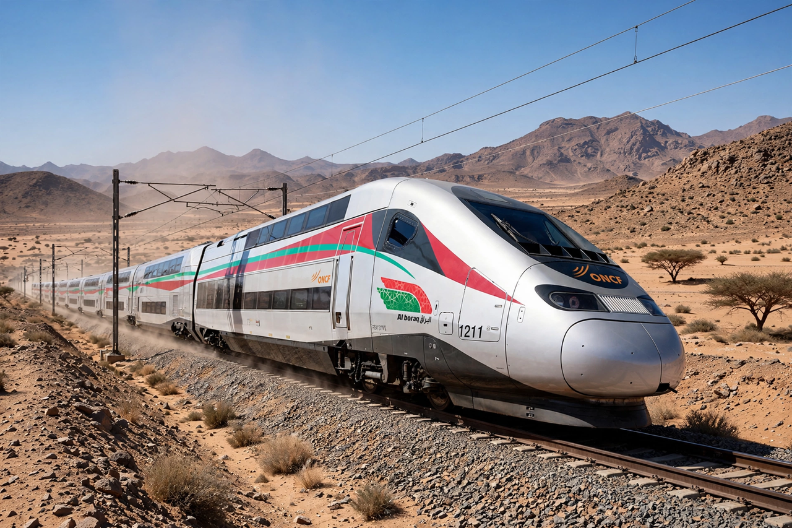

Al Boraq (Arabic: البُراق, al-burāq) is a high-speed rail service between Casablanca and Tangier in Morocco, operated by the national railway company ONCF. Inaugurated on 15 November 2018 by King Mohammed VI and French President Emmanuel Macron, it is the first high-speed railway in Africa. The service is named after the Buraq, the legendary winged creature that in Islamic tradition carried the Prophet Muhammad on the Night Journey.

| Operator | ONCF |
|---|---|
| Inaugurated | 15 November 2018 |
| Route | Tangier – Kenitra – Rabat – Casablanca |
| Length | 350 km (186 km new high-speed section) |
| Top speed | 320 km/h (record 357 km/h in testing) |
The line uses a new 186 km dedicated high-speed section between Tangier and Kenitra, designed for 320 km/h, and upgraded conventional track from Kenitra through Rabat to Casablanca. Travel time between Tangier and Casablanca fell from nearly five hours to just over two hours. The project cost about 20 billion dirhams (roughly €1.9 billion), financed partly by French loans, and included new stations at Tangier, Kenitra, Rabat-Agdal and Casablanca Voyageurs.
Al Boraq services are operated by twelve Alstom Avelia Euroduplex double-deck trainsets, adapted for Moroccan climatic conditions. During testing in 2018 an Al Boraq train reached 357 km/h, an African rail speed record. Two classes are offered, with fares set to compete with road travel; ridership reached several million passengers per year within the first years of operation.
Morocco plans to extend high-speed lines south to Marrakech and Agadir, partly in preparation for the 2030 FIFA World Cup, which Morocco will co-host with Spain and Portugal. Additional Avelia Horizon trainsets have been ordered from Alstom.